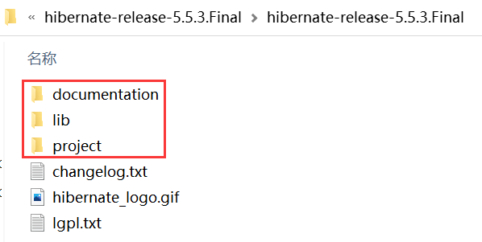
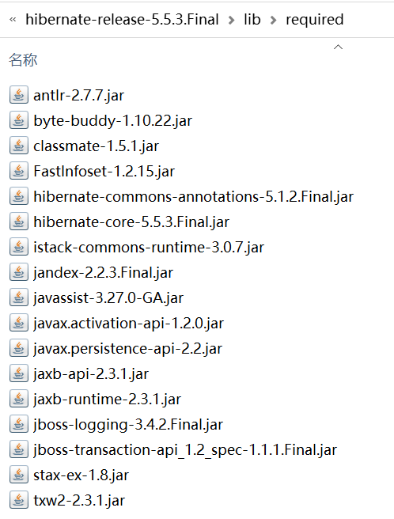
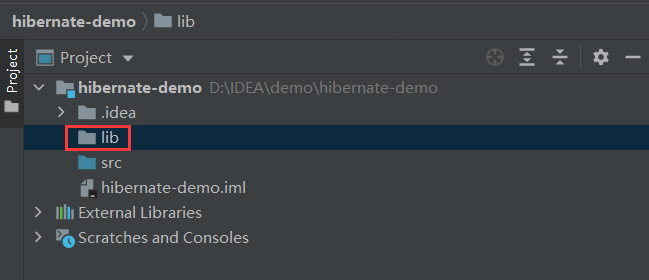
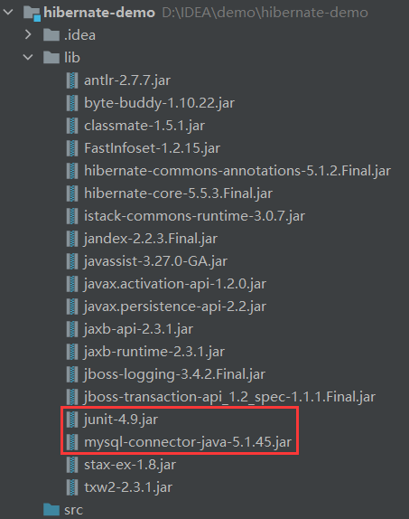
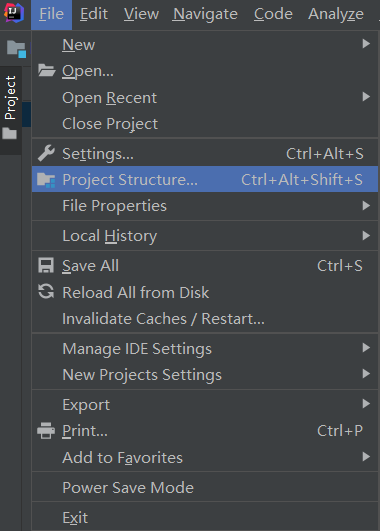
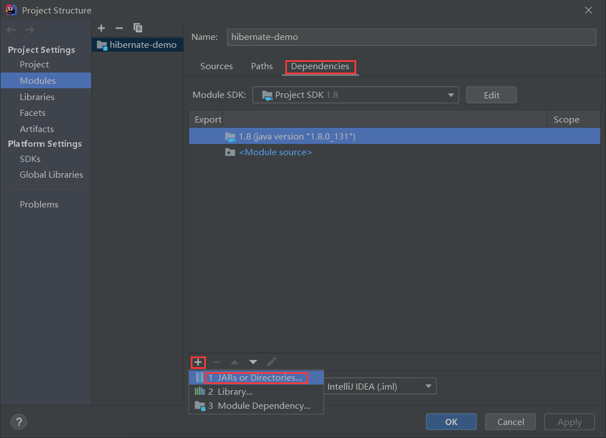
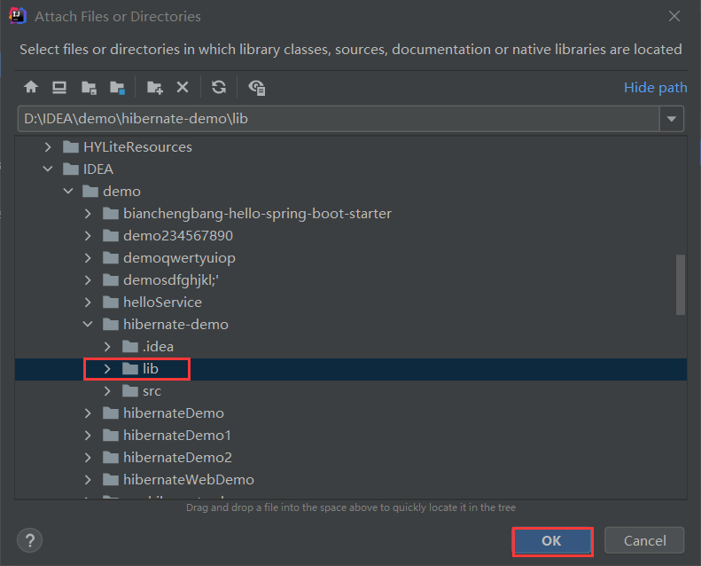
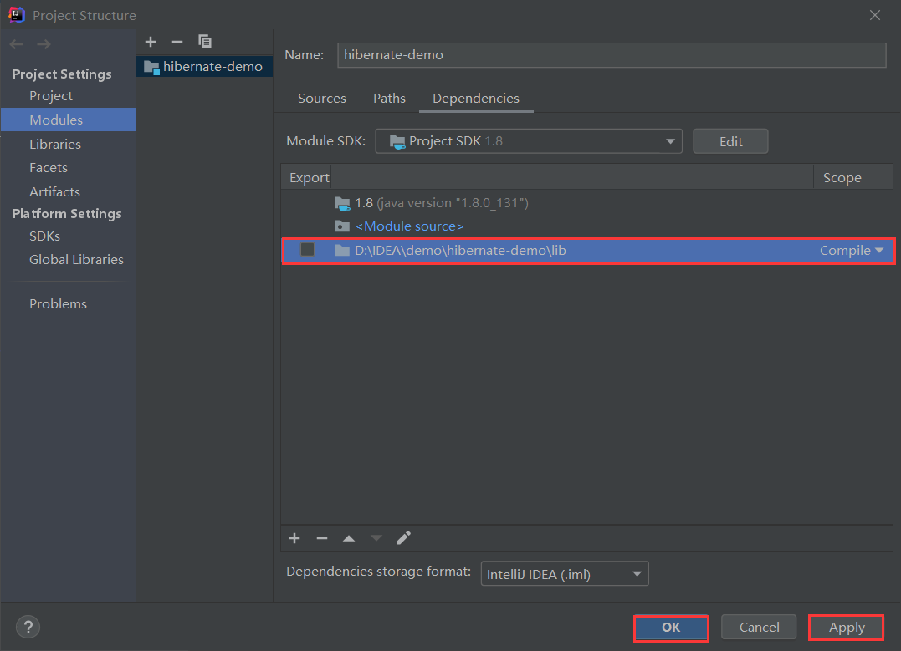

Hibernate项目创建流程（IDEA版）
本节我们将演示如何搭建一个 Hibernate 工程。
搭建 Hibernate 工程需要以下 7 步：
在 lib 目录下有一个 required 文件夹，其中包含了 Hibernate 5 必须依赖的 jar 包，如下图。
2. 将 required 目录中的所有 jar 包拷贝到 Hibernate 工程下的 lib 目录中，除此之外，为了与数据库进行连接，我们还需要下载 MySQL 数据库驱动程序和 junit 的 Jar 包，并将它们都拷贝到 lib 目录中，如下图。
3. 在 IDEA 上方的菜单栏点击 File，选择 Project Structure...，进入工程结构视图。
4. 在工程结构视图左侧选中 Modules，点击右侧的 Dependencise 标签，并点击该标签页下方的“+”，选择“JARs or Directories...” ，如下图。
5. 在弹出的“Attach Files or Directories”视图中，选择 hibernate-demo 工程下的 lib 目录，然后点击 OK 按钮，如下图。
6. 返回 Dependencise 页后可以看到，lib 目录中依赖已经引入到了该工程之中，点击下方的 Apply 按钮保存，最后再点击 OK 按钮，如下图。
Hibernate 的映射文件的命名规则如下：
在 net.biancheng.www.mapping 包下，创建 User 的映射文件 User.hbm.xml，配置如下。
在 Hibernate 工程的 src 目录下，新建一个 hibernate.cfg.xml 文件，配置如下。
2. 运行测试方法 testQuery()，控制台输出如下。
从控制台输出可以看到，Hibernate 自动执行查询语句，并得到了查询结果。
搭建 Hibernate 工程需要以下 7 步：
- 下载 Hibernate 开发包
- 新建工程
- 创建数据库表
- 创建实体类
- 创建映射文件
- 创建 Hibernate 核心配置文件
- 测试
1. 下载 Hibernate 开发包
浏览器访问 Hibernate 官网 下载 Hibernate（以 hibernate-release-5.5.3.Final 为例）开发包。目录介绍
下载完成后，解压 hibernate-release-5.5.3.Final.zip，可得到以下目录结构。

图1：Hibernate 目录结构图
Hibernate 文件夹中，包含以下 3 个目录：
- documentation：Hibernate 的开发文档；
- lib：Hibernate 相关的依赖；
- project：Hibernate 官方给出的示例工程。
在 lib 目录下有一个 required 文件夹，其中包含了 Hibernate 5 必须依赖的 jar 包，如下图。

图2：Hibernate 必须 jar 包
图2：Hibernate 必须 jar 包
2. 新建工程
1. 以 IntelliJ IDEA 为例，新建一个名为 hibernate-demo 的 Java 工程，并在该项目根目录下新建一个 lib 目录，如下图。

图3：新建 java 项目
图3：新建 java 项目
2. 将 required 目录中的所有 jar 包拷贝到 Hibernate 工程下的 lib 目录中，除此之外，为了与数据库进行连接，我们还需要下载 MySQL 数据库驱动程序和 junit 的 Jar 包，并将它们都拷贝到 lib 目录中，如下图。

图4：IDEA Hibernate 依赖包
图4：IDEA Hibernate 依赖包
3. 在 IDEA 上方的菜单栏点击 File，选择 Project Structure...，进入工程结构视图。

图5：Project Structure
图5：Project Structure
4. 在工程结构视图左侧选中 Modules，点击右侧的 Dependencise 标签，并点击该标签页下方的“+”，选择“JARs or Directories...” ，如下图。

图6：工程结构依赖视图
图6：工程结构依赖视图
5. 在弹出的“Attach Files or Directories”视图中，选择 hibernate-demo 工程下的 lib 目录，然后点击 OK 按钮，如下图。

图7：Attach Files or Directories
图7：Attach Files or Directories
6. 返回 Dependencise 页后可以看到，lib 目录中依赖已经引入到了该工程之中，点击下方的 Apply 按钮保存，最后再点击 OK 按钮，如下图。

图8：保存配置
图8：保存配置
3. 创建数据库表
执行以下 SQL 语句，在 bianchengbang_jdbc 数据库中创建 user 表，并向该表中添加测试数据。
DROP TABLE IF EXISTS `user`;
CREATE TABLE `user` (
`id` int NOT NULL AUTO_INCREMENT,
`user_id` varchar(255) DEFAULT NULL,
`user_name` varchar(255) DEFAULT NULL,
`password` varchar(255) DEFAULT NULL,
`email` varchar(255) DEFAULT NULL,
PRIMARY KEY (`id`)
) ENGINE=MyISAM AUTO_INCREMENT=3 DEFAULT CHARSET=utf8mb4 COLLATE=utf8mb4_0900_ai_ci;
INSERT INTO `user` VALUES ('1', '001', 'admin', 'admin', '12345678@qq.com');
INSERT INTO `user` VALUES ('2', '002', 'user', '123456', '98765432@qq.com');
4. 创建实体类
在 hibernate-demo 工程的 net.biancheng.www.po 包下，创建一个与 user 表对应的实体类 User，代码如下。
package net.biancheng.www.po;
/**
* 实体类
* 与 bianchegnbang_jdbc 数据库中的 user 表对应
*/
public class User {
private int id;
private String userId;
private String userName;
private String password;
private String email;
public int getId() {
return id;
}
public void setId(int id) {
this.id = id;
}
public String getUserId() {
return userId;
}
public void setUserId(String userId) {
this.userId = userId;
}
public String getUserName() {
return userName;
}
public void setUserName(String userName) {
this.userName = userName;
}
public String getPassword() {
return password;
}
public void setPassword(String password) {
this.password = password;
}
public String getEmail() {
return email;
}
public void setEmail(String email) {
this.email = email;
}
@Override
public String toString() {
return "net.biancheng.www.po.User{" +
"id=" + id +
", userId='" + userId + '\'' +
", userName='" + userName + '\'' +
", password='" + password + '\'' +
", email='" + email + '\'' +
'}';
}
}
5. 创建映射文件
单单一个实体类 User 是不具备持久化操作的能力的，为了使该类具备这种能力，就需要将 User 实体类映射到数据库的某一张表中，并将实体类中的属性与数据表的字段相对应，这些都需要在映射文件中配置。Hibernate 的映射文件的命名规则如下：
[实体类名].hbm.xml例如，实体类 User 的映射文件就可以命名为 User.hbm.xml。
在 net.biancheng.www.mapping 包下，创建 User 的映射文件 User.hbm.xml，配置如下。
<?xml version='1.0' encoding='utf-8'?>
<!DOCTYPE hibernate-mapping PUBLIC
"-//Hibernate/Hibernate Mapping DTD 3.0//EN"
"http://www.hibernate.org/dtd/hibernate-mapping-3.0.dtd">
<hibernate-mapping>
<!-- name:类的全路径:-->
<!-- table:表的名称:(可以省略的.使用类的名称作为表名.)-->
<class name="net.biancheng.www.po.User" table="user" schema="bianchengbang_jdbc">
<!-- 主键-->
<id name="id" column="id">
<!--主键生成策略-->
<generator class="native"></generator>
</id>
<!--type:三种写法-->
<!--Java类型 :java.lang.String-->
<!--Hibernate类型:string-->
<!--SQL类型 :不能直接使用type属性,需要子标签<column>-->
<!--<column name="name" sql-type="varchar(20)"/>-->
<property name="userId" column="user_id" type="java.lang.String"/>
<property name="userName" column="user_name"/>
<property name="password" column="password"/>
<property name="email" column="email"/>
</class>
</hibernate-mapping>
6. 创建 Hibernate 核心配置文件
Hibernate 框架是对 JDBC 的封装，也需要对 JDBC 连接数据库所需的 url、driver、username 和 password 等 4 个基本参数进行配置，Hibernate 一般是通过配置文件 hibernate.cfg.xml 来指定的，该文件被称为 Hibernate 的核心配置文件。在 Hibernate 工程的 src 目录下，新建一个 hibernate.cfg.xml 文件，配置如下。
<?xml version='1.0' encoding='utf-8'?>
<!DOCTYPE hibernate-configuration PUBLIC
"-//Hibernate/Hibernate Configuration DTD//EN"
"http://www.hibernate.org/dtd/hibernate-configuration-3.0.dtd">
<hibernate-configuration>
<session-factory>
<!--使用 Hibernate 自带的连接池配置-->
<property name="connection.url">jdbc:mysql://localhost:3306/bianchengbang_jdbc</property>
<property name="hibernate.connection.username">root</property>
<property name="hibernate.connection.password">root</property>
<property name="connection.driver_class">com.mysql.jdbc.Driver</property>
<!--hibernate 方言-->
<property name="hibernate.dialect">org.hibernate.dialect.MySQL5Dialect</property>
<!--打印sql语句-->
<property name="hibernate.show_sql">true</property>
<!--格式化sql-->
<property name="hibernate.format_sql">true</property>
<!-- 加载映射文件 -->
<mapping resource="net/biancheng/www/mapping/User.hbm.xml"/>
</session-factory>
</hibernate-configuration>
7. 测试
1. 在 net.biancheng.www.test 包下，创建一个名为 MyTest 的测试类，并在该测试类中创建一个测试方法 testQuery()，使用 Hibernate 实现对数据库的查询，代码如下。
package net.biancheng.www.test;
import net.biancheng.www.po.User;
import org.hibernate.Session;
import org.hibernate.SessionFactory;
import org.hibernate.Transaction;
import org.hibernate.cfg.Configuration;
import org.hibernate.query.Query;
import org.junit.Test;
import java.util.List;
public class MyTest {
/**
* 查询数据库数据
*/
@Test
public void testQuery() {
//Hibernate 加载核心配置文件（有数据库连接信息）
Configuration configuration = new Configuration().configure();
//创建一个 SessionFactory 用来获取 Session 连接对象
SessionFactory sessionFactory = configuration.buildSessionFactory();
//获取session 连接对象
Session session = sessionFactory.openSession();
//开始事务
Transaction transaction = session.beginTransaction();
//根据主键查询 user 表中的记录
User user = session.get(User.class, 1);
System.out.println(user);
//提交事务
transaction.commit();
//释放资源
session.close();
sessionFactory.close();
}
}
2. 运行测试方法 testQuery()，控制台输出如下。
七月 19, 2021 12:24:28 下午 org.hibernate.Version logVersion
INFO: HHH000412: Hibernate ORM core version 5.5.3.Final
七月 19, 2021 12:24:29 下午 org.hibernate.annotations.common.reflection.java.JavaReflectionManager <clinit>
INFO: HCANN000001: Hibernate Commons Annotations {5.1.2.Final}
七月 19, 2021 12:24:30 下午 org.hibernate.engine.jdbc.connections.internal.DriverManagerConnectionProviderImpl configure
WARN: HHH10001002: Using Hibernate built-in connection pool (not for production use!)
七月 19, 2021 12:24:30 下午 org.hibernate.engine.jdbc.connections.internal.DriverManagerConnectionProviderImpl buildCreator
INFO: HHH10001005: using driver [com.mysql.jdbc.Driver] at URL [jdbc:mysql://localhost:3306/bianchengbang_jdbc]
七月 19, 2021 12:24:30 下午 org.hibernate.engine.jdbc.connections.internal.DriverManagerConnectionProviderImpl buildCreator
INFO: HHH10001001: Connection properties: {user=root, password=****}
七月 19, 2021 12:24:30 下午 org.hibernate.engine.jdbc.connections.internal.DriverManagerConnectionProviderImpl buildCreator
INFO: HHH10001003: Autocommit mode: false
七月 19, 2021 12:24:30 下午 org.hibernate.engine.jdbc.connections.internal.DriverManagerConnectionProviderImpl$PooledConnections <init>
INFO: HHH000115: Hibernate connection pool size: 20 (min=1)
Mon Jul 19 12:24:30 CST 2021 WARN: Establishing SSL connection without server's identity verification is not recommended. According to MySQL 5.5.45+, 5.6.26+ and 5.7.6+ requirements SSL connection must be established by default if explicit option isn't set. For compliance with existing applications not using SSL the verifyServerCertificate property is set to 'false'. You need either to explicitly disable SSL by setting useSSL=false, or set useSSL=true and provide truststore for server certificate verification.
七月 19, 2021 12:24:31 下午 org.hibernate.dialect.Dialect <init>
INFO: HHH000400: Using dialect: org.hibernate.dialect.MySQL8Dialect
七月 19, 2021 12:24:32 下午 org.hibernate.engine.transaction.jta.platform.internal.JtaPlatformInitiator initiateService
INFO: HHH000490: Using JtaPlatform implementation: [org.hibernate.engine.transaction.jta.platform.internal.NoJtaPlatform]
Hibernate:
select
user0_.id as id1_0_0_,
user0_.user_id as user_id2_0_0_,
user0_.user_name as user_nam3_0_0_,
user0_.password as password4_0_0_,
user0_.email as email5_0_0_
from
user user0_
where
user0_.id=?
net.biancheng.www.po.User{id=1, userId='001', userName='admin', password='admin', email='12345678@qq.com'}
七月 19, 2021 12:24:32 下午 org.hibernate.engine.jdbc.connections.internal.DriverManagerConnectionProviderImpl$PoolState stop
INFO: HHH10001008: Cleaning up connection pool [jdbc:mysql://localhost:3306/bianchengbang_jdbc]
从控制台输出可以看到，Hibernate 自动执行查询语句，并得到了查询结果。
关注公众号「站长严长生」，在手机上阅读所有教程，随时随地都能学习。内含一款搜索神器，免费下载全网书籍和视频。

微信扫码关注公众号